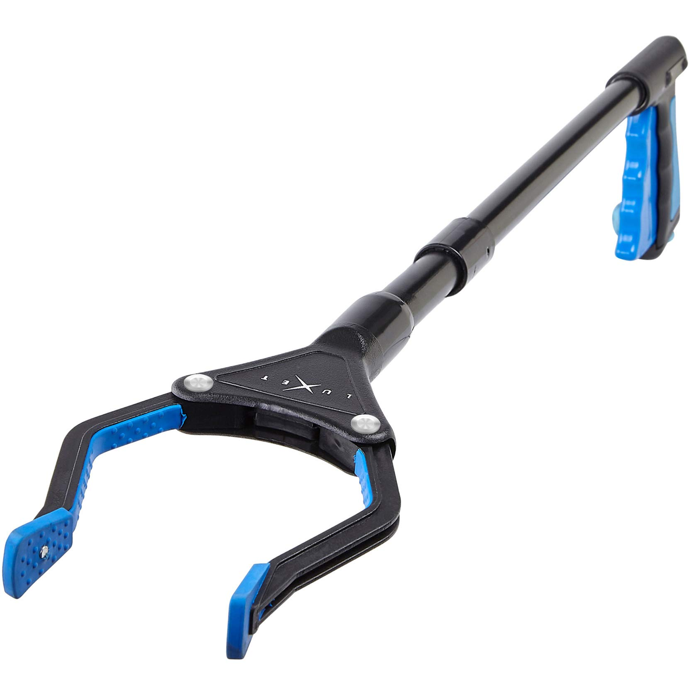
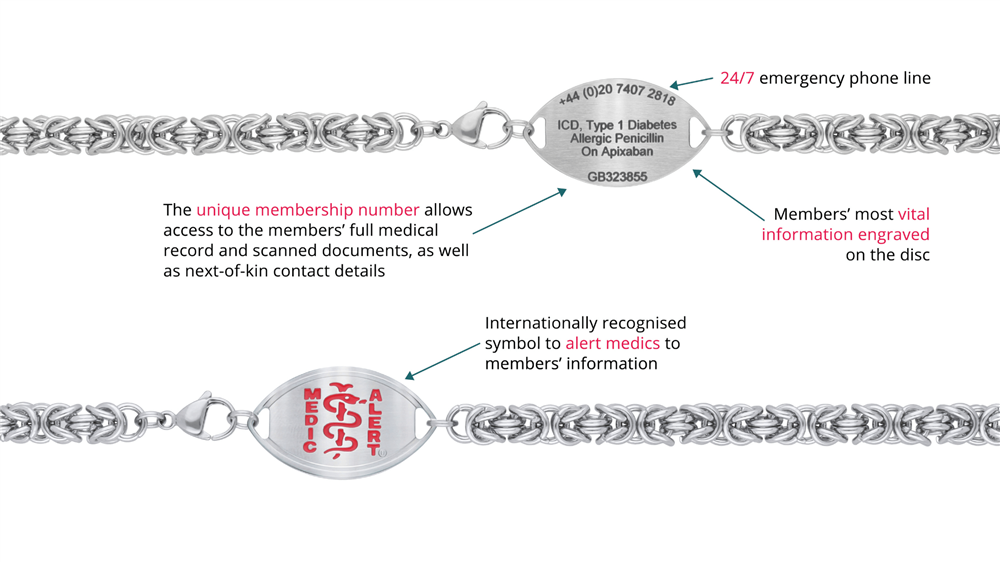
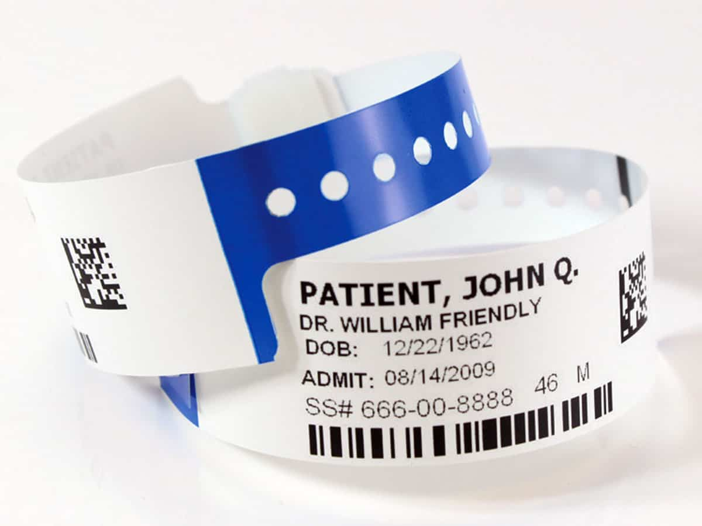
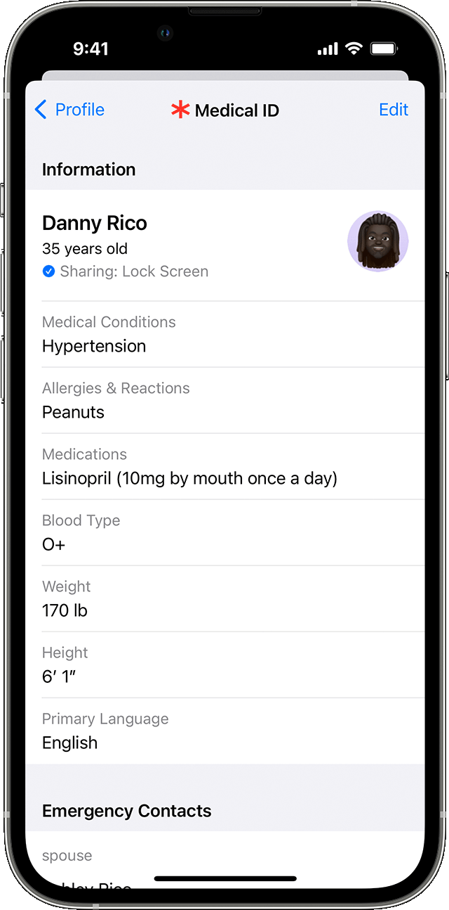
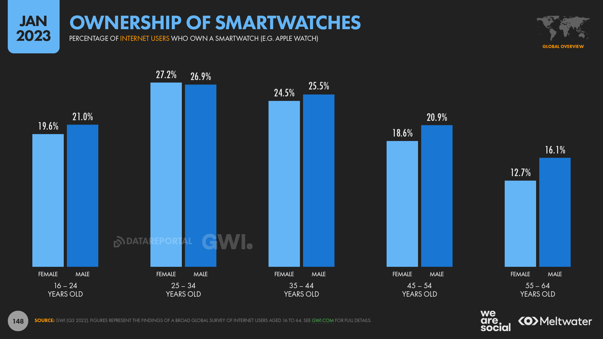
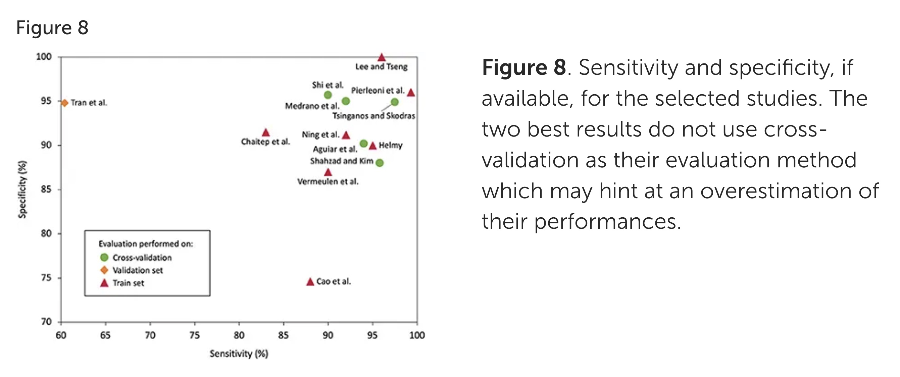
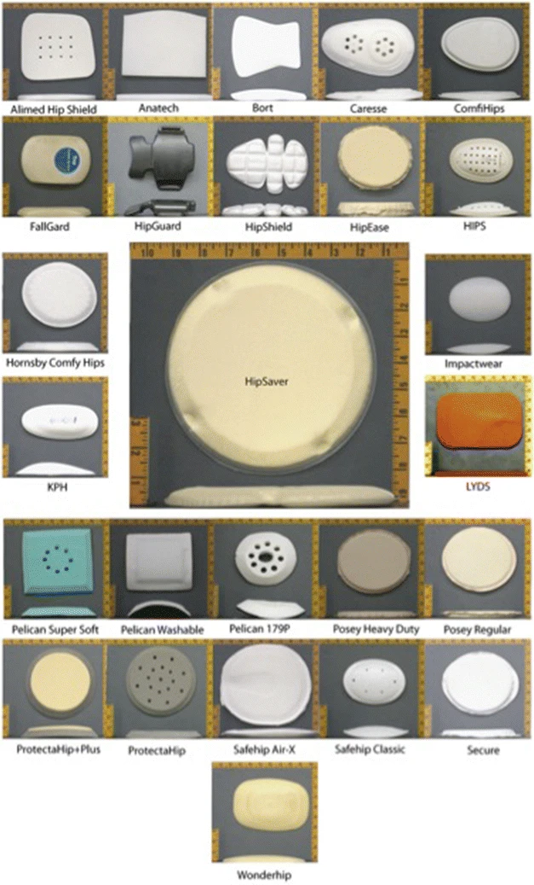

An overview of wearable assistive technologies with several selected examples of devices that have the potential to be used in older adults, case studies, and impact of such devices on patient and caregiver metrics.
Introduction
What are Assistive Technologies?
Assistive technologies are physical or virtual tools that can help people with disabilities improve functional status.
A wide variety of technologies (including analog/low-tech products) have been well-established for use in patients with various functional impairments, including communication boards, text-to-speech software, canes/walkers/wheelchairs, pillboxes, and to-do/reminder lists. Older people are one particular population who stand to benefit from innovation in the assistive technology space as they often experience functional impairment associated with aging, medical comorbidity, and loss of independence in performing activities of daily living (ADLs).

Examples of low-tech assistive technologies. From left to right: communication board, reacher-grabber tool, shopping list.
Excerpt of ICU Delirium Communication Board from icudelirium.org.
Grabber tool from Amazon listing.
Shopping list from unsplash.com.
Many examples are specialized equipment/software, but assistive technology can even include a smartphone alarm app on to remind a patient to take medications at regular times or a calendar app to keep track of appointments/commitments in patients with memory difficulties.
Caregivers and medical teams can also take advantage of assistive technologies. Technology can help alleviate caregiver burden by automating or assisting with some tasks without the need for an additional person and medical professionals may be able to get realtime monitoring data that can help guide management.
A 2015 meta-analysis concluded that assistive technologies (of many types) reduced caregiver anxiety, time spent caregiving, and increased both caregiver and patient independence, but with the caveat that some technologies may actually contribute to burden if difficult to learn or provide additional work.
What are Wearables?
Wearable technologies are devices that are built to be carried on the person and often take the form of smartwatches, rings, wristbands, necklaces, biosensor stickers. If used for medical purposes, they can be regulated as medical devices by the FDA.
Even though wearable medical devices have many promising use cases, there are also several considerations that may limit their adoption.
Source: Canali S, Schiaffonati V, Aliverti A. Challenges and recommendations for wearable devices in digital health: Data quality, interoperability, health equity, fairness.PLOS Digit Health.
They may be expensive and require the purchase of specialized equipment with potential maintenance costs, though many are eligible to be purchased with FSA/HSA funds. On-boarding and patient/caregiver education for new technology may be difficult as well, especially as older adults may not be as tech-savvy.
Wearing a physical device for even some part of the day may feel unnatural or take time to get used to.
Finally, while not all wearables may need to be designated as medical devices in order to be useful, those that do have an additional administrative/regulatory hurdle and data accuracy/reliability may be hit or miss depending on the specific manufacturer.
A very simple form of wearable technology is a wearable medical ID.
This is oftentimes in the form of a bracelet or necklace that the patient wears and commonly include patient identifiers, emergency contact information, and special medical diagnoses.

Example MedicAlert bracelet. MedicAlert also maintains a registry of patients that can be accessed over the phone or online for additional data.
In older adults, it can be helpful to identify a patient if they are not oriented at baseline or suffer sudden mental status declines, allowing for additional independence while reducing the need for a caregiver to always be present in case the patient cannot be identified.
Wearable medical IDs are already implemented routinely in the healthcare setting (and are probably the single wearable medical device with the highest uptake in general) — wristbands with name, date of birth, and location/provider for patients during intake for outpatient or inpatient visits.

Example patient wristband containing name, date of birth, provider, admit date, and barcode/QR code.
Historically, they were designed to be worn on the wrist so that they would be in view when taking the radial pulse.
Most modern smartphones also have medical ID technology enabled.

iPhone medical ID interface. Original image and more information available on Apple website.
Since these bracelets are low tech, they can be very affordable.
A Google search for medical identification bracelets shows many options for less than $50 (including text engraving), with optional $20-100 a year subscription to maintain online records.
Some services offer subscription plans that come with an emergency contact number that medical personnel or caregivers can call for additional patient information or assistance.
Medical identification bracelets have several limitations, mostly stemming from the lack of regulation or standardization.
A 2017 review article on medical identification devices brought up several of these issues including the example of "allergy to anesthesia" vs. "malignant hyperthermia."
In the latter case, there is a clear actionable change based on the diagnosis, but the former case is unclear as to what the clinical significance is but leaves room for liability both if a provider decides to act on (or not act on) the information.
Since most vendors sell directly to individuals and the buyer determines what information is engraved or included, they are prone to potentially false or unhelpful information that may be difficult to interpret without context.
These devices are meant to be used when the patient is unable to provide information themselves, so there is often no opportunity for clarification.
A question of liability and legal ramifications is also raised in that medical professionals may or may not have the responsibility to routinely perform a thorough search on the body for medical IDs.
Furthermore, if information from medical bracelets should routinely be followed, it is unclear what that means for other forms of information available on the body, such a tattoo stating DNR.
There is also no regulation or standardization, and there is no defined list of conditions, so diagnoses or information from a medical ID may not be reliable or convey the same meaning as they would to a medical professional.
One resolution to these issues that any information obtained through them should be considered the same as if it were obtained verbally from the patient or family and treated as an additional piece of information instead of a definitive truth or official medical record, but these questions limit these devices' usefulness.
One category of wearable assistive devices is monitoring. This can consist of both monitoring of medical data and non-medical data.
Many wearable monitors are smartwatches or fitness trackers worn on the wrist.
There are also biosensors that can be attached to other parts of the skin with an adhesive and smart rings coming onto the market.
These may have more specialized monitoring purposes (such as a Holter monitor) or be more accurate for certain metrics based on location (i.e. chest strap for heart rate).

Data from 2022 survey showing smartwatch ownership among internet users by age group with reasonable uptake among all surveyed age groups.4
Non-medical use cases can be as simple as a GPS-enabled device that can help family members and friends keep track of their loved ones, such as for patients with cognitive decline and who are at risk of getting lost.
For individuals who are hard of hearing, some devices (including smartphones and some smartwatches) have sound detection features to provide tactile notifications when an alarm (such as a cooking alarm or smoke alarm) goes off.
Case Study
The Apple Watch (and other similar smartwatches) is a one example of a smartwatch that has reached considerable adoption.
The Apple Watch has capabilities for vital signs monitoring (other than blood pressure), can track sleep, and comes in models with a built-in GPS.
The included accelerometer also has car crash and fall detection.
In more vulnerable populations or populations with less technological literacy, permission can be granted for medical professionals or caregivers/loved ones to have access.
This can help reduce the need for a caregiver constantly at the patient's side.
The Apple Watch's monitoring accuracy has also been tested in several studies.
In a study on hypoxic patients with COPD exacerbations, when compared to the gold standard (arterial blood gas measurements) the Apple Watch 6's pulse oximetry readings had a mean error of 0.458%.5
Based on the mean error associated with standard pulse oximetry (1.015% as reported in the same study), the authors concluded that the Apple Watch was more accurate.
In another similar study on patients with lung disease, both heart rate and oxygen saturation measurements from the Apple Watch were strongly correlated with gold standard measurements.6
Apple Watch's EKG feature has also been validated for at least several of the most common arrhythmias.
Apple Watch EKG interface.
One group evaluated both the Apple Watch's built-in atrial fibrillation detection accuracy and the ability of a trained clinician to use the generated EKG to diagnose an arrhythmia.7
They found that the Apple Watch produced EKG tracings that were >90% sensitive for diagnosing normal sinus rhythm, atrial fibrillation, sinus tachycardia, sinus bradycardia, and supraventricular tachycardia.
For ST-segment depression, wide QRS complexes, premature atrial/ventricular depolarizations, sensitivity was around 80% or limited by sample size.
Falls are an example of a situation where several types of wearable assistive devices can be helpful in preventing harm.
More than a quarter of all adults over the age of 65 report falling at least once in the past year.8
Fear of falling can lead to loss of independence and reduced mobility in older adults.
Fall Detection
One issue leading to morbidity in patients who suffer from falls is time spent down.
Patients may lose consciousness before or after a fall, lack the strength to pick themselves up after the fall, or have no way of calling for help.
Prolonged time on the floor after a fall can result in serious medical complications, such as rhabdomyolysis.
Fear of falls, and not knowing if help will be accessible, can lead older adults to reduce physical activity and lose independence.
Since wearable devices move with the person, they have access to data about the wearer's position in space and can compute movement speeds/acceleration/higher derivatives.
Assuming that the body moves differently when falling, predictive algorithms can be trained to recognize what pattern of motions correspond to falls.9

Figure from review paper on fall detection algorithms based on accelerometer data.
Overall, various algorithms have at least >75% sensitivity and specificity for fall detection, but the authors note that it is hard to obtain a genuine dataset of falls, especially in older adults.
Even if imperfect, fall detection via wearable device can be an added layer to reduce the quantity of falls that go undiscovered.
A 2021 case study of implementing fall detection sensors in among hospitalized patients found that challenges included adherence (enrolled patients wore the sensor for only ~50% of the time) and additional nursing staff work from false alarms.10
They also found that there was no increased incidence of delirium in patients wearing the sensors as well.
Harm Reduction/Prevention
Many monitors with fall detection capabilities, such as a bracelet/smart-watch (which often already has fall detection capabilities), are able to contact emergency contacts and/or emergency services both when a fall is detected or with the push of a button, potentially reducing time spent down after a fall.
Even a lower-tech device that can only call EMS (a medical alert device) has a use case as well where an at-risk person has fallen and is unable to get up on their own but remains conscious.
There are also some wearable devices that are specifically aimed at reducing the physical impact of falls.

Figure of various commercially available hip pads from paper on mechanical properties of hip pads.11 They can make patients several inches wider at the hips.
Hip pads have been investigated in several studies, many of which finding that patients assigned to wear them did not have significant differences in fracture rate.
This review also came to the recommendation that patients at highest risk for hip fracture, such as those in nursing homes, where there is a better ability to monitor and enforce use, may be well suited for increased use.
In those studies, compliance was implicated, as they were often only worn sporadically or removed for comfort.
Patients with cognitive impairment and dementia who may be most at risk for hip fractures were found to also be most likely to have poor compliance with hip pads.
Some studies with better compliance did find significant decreases in hip fracture rate, such as one conducted in a Japanese nursing home where hip pad wearers had a 0.8% hip fracture rate per fall compared to a 8.2% hip fracture rate in the non-wearer control group.
The Japanese nursing home study is limited by the fact that they only had three hip fractures during the study period, but the 8% hip fracture rate per fall in the control group is similar to the statistic that 10-15% of falls lead to fractures.
Another issue brought up was potential impact on quality of life, given bulkiness of hip pads and potential shame/distress from having to wear them.
Assistive technology: any object/software that helps somebody perform a task
Wearables: devices that can be worn on the body for a part of or the whole day
Use of wearables may be limited by cost, difficulty to learn, discomfort, accuracy/reliability, and regulatory requirements
Assistive devices have been shown to help alleviate caregiver burden and feelings of anxiety
Medical IDs
Wearables that help identify patients and provide key medical information are affordable and can be helpful when a patient is unable to provide information on their own and collateral information is unavailable
Sometimes medical ID wristbands/necklaces come with buttons to press to call an emergency contact or emergency services
Lack of regulation around terminology and potential liability pose challenges for clinical use
Smart Monitors
Wearable sensors can transcutaneously measure/estimate vital signs such as heart rate, and oxygen saturation
Many smartwatches or fitness bands come with built-in biosensors and functionality to alert emergency contacts or emergency services
Some devices have audio support to provide tactile notifications when alarms go off for individuals who are hard of hearing
Wearable sensors vary in accuracy and reliability
Apple Watch technology has been validated for accuracy in heart rate, oxygen saturation, and EKG tracing diagnostic ability in several populations
Falls
Falls are very common in older adults (estimated at >25% incidence per year)
Fear of falls can lead to loss of independence and reduced physical activity
Prolonged time down is associated with complications like rhabdomyolysis
Wearable smartwatches or dedicated fall detection devices can identify falls and alert emergency contacts or emergency services with or without user input
Hip pads have been found to, with optimal use (close to 24/7), significantly reduce the risk of hip fracture in high risk patients, though ideal use is challenging to achieve
For patients at risk for falls but wish to continue living independently, wearable devices can help detect falls and reduce the negative impact of falls
Madara Marasinghe K. Assistive technologies in reducing caregiver burden among informal caregivers of older adults: A systematic review. Disability and Rehabilitation: Assistive Technology. 2015;11(5):353-360. doi:10.3109/17483107.2015.1087061
Canali S, Schiaffonati V, Aliverti A. Challenges and recommendations for wearable devices in digital health: Data quality, interoperability, health equity, fairness. PLOS Digit Health. 2022;1(10):e0000104. Published 2022 Oct 13. doi:10.1371/journal.pdig.0000104
Rahman S, Walker D, and Sultan, P. Medical identification or alert jewellery: an opportunity to save lives or an unreliable hindrance?. Anaesthesia. 2017;72(9):1139-1145. doi:10.1111/anae.13958
Arslan B, Sener K, Guven R, et al. Accuracy of the Apple Watch in measuring oxygen saturation: Comparison with Pulse Oximetry and ABG. Irish Journal of Medical Science. 2023;193(1):477-483. doi:10.1007/s11845-023-03456-w
Pipek LZ, Nascimento RF, Acencio MM, Teixeira LR. Comparison of spo2 and heart rate values on Apple Watch and conventional commercial oximeters devices in patients with lung disease. Scientific Reports. 2021;11(1). doi:10.1038/s41598-021-98453-3
Paslı S, Topçuoğlu H, Yılmaz M, Yadigaroğlu M, İmamoğlu M, Karaca Y. Diagnostic accuracy of Apple Watch ECG outputs in identifying dysrhythmias: A comparison with 12-lead ECG in emergency department. The American Journal of Emergency Medicine. 2024;79:25-32. doi:10.1016/j.ajem.2024.01.046
Bergen G, Stevens MR, Burns ER. Falls and Fall Injuries Among Adults Aged ≥65 Years — United States, 2014. MMWR Morb Mortal Wkly Rep. 2016;65:993–998. doi:10.15585/mmwr.mm6537a2
Stampfler T, Elgendi M, Fletcher RR, Menon C. Fall detection using accelerometer-based smartphones: Where do we go from here? Frontiers in Public Health. 2022;10. doi:10.3389/fpubh.2022.996021
Visvanathan R, Ranasinghe DC, Lange K, et al. Effectiveness of the wearable sensor-based ambient intelligent geriatric management (ambigem) system in preventing falls in older people in Hospitals. The Journals of Gerontology: Series A. 2021;77(1):155-163. doi:10.1093/gerona/glab174
Laing AC, Feldman F, Jalili M, Tsai CM, Robinovitch SN. The effects of pad geometry and material properties on the biomechanical effectiveness of 26 commercially available hip protectors. Journal of Biomechanics. 2011;44(15):2627-2635. doi:10.1016/j.jbiomech.2011.08.016
Cianferotti L, Fossi C, Brandi ML. Hip protectors: Are they worth it? Calcified Tissue International. 2015;97(1):1-11. doi:10.1007/s00223-015-0002-9
Harada A, Mizuno M, Takemura M, Tokuda H, Okuizumi H, Niino N. Hip fracture prevention trial using hip protectors in Japanese nursing homes. Osteoporosis International. 2001;12(3):215-221. doi:10.1007/s001980170132